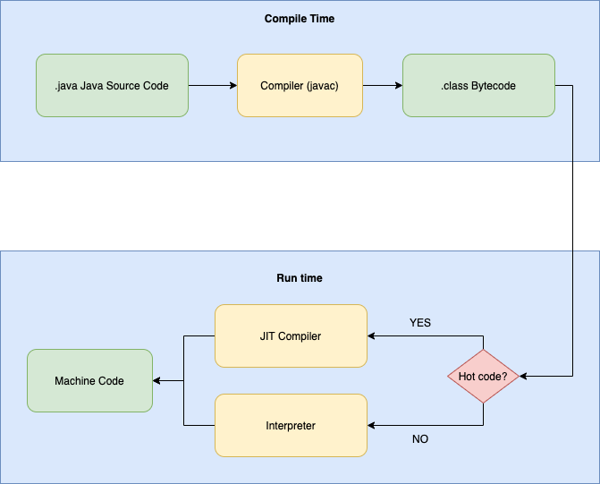

Metody i narzędzia generowania kodu wykonywalnego
ppor. mgr inż. Norbert Waszkowiak
nr tel.: 261 839 060
e-mail: norbert.waszkowiak@wat.edu.pl
pomieszczenie: bud. 100 pok. 254B
konsultacje online i stacjanarnie: po wcześniejszym umówieniu
e-mail: norbert.waszkowiak@wat.edu.pl
pomieszczenie: bud. 100 pok. 254B
konsultacje online i stacjanarnie: po wcześniejszym umówieniu
Zasady oceniania
- Każde przedstawione zadanie podlega punktacji. W trakcie jednego spotkania można uzyskać 100punktów;
- W przypadku stwierdzenia niesamodzielności w wykonaniu pracy zostanie ona wliczona do średniej jako 0pkt.
- Ostateczna ocena z laboratoriów będzie wynikiem liczny zebranych punktów, zgodnie z
skalą:
- 0-50 pkt -> 2
- 51-60 pkt -> 3
- 61-70 pkt -> 3,5
- 71-80 pkt -> 4
- 81-90 pkt -> 4,5
- 91-100 pkt -> 5
- Obecność na wszystkich zajęciach jest obowiązkowa. Zaległości można usunąć uczestnicząc w zajęciach z inną grupą, po wcześniejszym poinformowaniu prowadzącego. W przypadku, gdy zajęcia z pozostałymi grupami już się odbyły, można odrobić zajęcia na konsultacjach. Dopuszczalna liczba nieobecności: 1.
- Zajęcia będą realizowane z wykorzystaniem serwisu https://classroom.github.com/. Terminy wykonania zadania są określone w zadaniach.
Wyrażenia regularne
A komu to potrzebne? A dlaczego?
Wyrażenia regularne (ang. regular expression, w skrócie regex lub regexp) - wzorzec opisujący łańcuch symboli. Teoria wyrażeń regularnych jest związana z teorią języków regularnych. Wyrażenia regularne mogą określać zbiór pasujących łańcuchów, jak również wyszczególniać istotne części łańcucha.Pokaz z objaśnieniem
Przykład z grupami dziekańskimi

Dane:
WCY18IX1S3 ; WCY19IG1S1 ; WCY19IJ1N1 ; WCY19IJ1S1 ; WCY19IJ2S1 ; WCY19IJ3S1 ; WCY19IJ4S1 ; WCY19IL1S0 ; WCY19IT1S0 ; WCY19IW1S0 ; WCY19KA1S0 ; WCY19KB1S0 ; WCY19KC1S0 ; WCY19KC1S1 ; WCY19KS1S0 ; WCY19KS1S1 ; WCY20IG1S1 ; WCY20IJ1N1 ; WCY20IJ1S1 ; WCY20IJ2S1 ; WCY20IJ3S1 ; WCY20IM1S1 ; WCY20IX1S0 ; WCY20IX2S0 ; WCY20IX3S0 ; WCY20IX4S0 ; WCY20IX5S0 ; WCY20IX6S0 ; WCY20IY1S1 ; WCY20IY2S1 ; WCY20IY3S1 ; WCY20IY4S1 ; WCY20IY5S1 ; WCY20KA1S1 ; WCY20KC1S1 ; WCY20KX1S0 ; WCY20KX2S0 ; WCY20KX3S0 ; WCY20KX4S0 ; WCY20KY1S1 ; WCY20KY2S1 ; WCY20KY3S1 ; WCY21E71N5 ; WCY21I*BDa ; WCY21I*BDb ; WCY21I*SO ; WCY21I*Tpi ; WCY21IB1S4 ; WCY21IB2S4 ; WCY21IE1S4 ; WCY21IH1S4 ; WCY21IM1S4 ; WCY21IV1S4 ; WCY21IX1N1 ; WCY21IX1S0 ; WCY21IX2N1 ; WCY21IX2S0 ; WCY21IX3S0 ; WCY21IX4S0 ; WCY21IX5S0 ; WCY21IX6S0 ; WCY21IY1S1 ; WCY21IY2S1 ; WCY21IY3S1 ; WCY21IY4S1 ; WCY21K*SAa ; WCY21K*SAb ; WCY21KB1S4 ; WCY21KB2S4 ; WCY21KB3S4 ; WCY21KC1S4 ; WCY21KS1S4 ; WCY21KS2S4 ; WCY21KT1S4 ; WCY21KX1S0 ; WCY21KX2S0 ; WCY21KX3S0 ; WCY21KX4S0 ; WCY21KX5S0 ; WCY21KX6S0 ; WCY21KY1S1 ; WCY21KY2S1 ; WCY22IA2aS6 ; WCY22IA2bS6 ; WCY22IB1N2 ; WCY22IB2N2 ; WCY22IB3aS6 ; WCY22IB3bS6 ; WCY22IBOS6 ; WCY22IE3aS6 ; WCY22IE3bS6 ; WCY22IX1N1 ; WCY22IX1N5 ; WCY22IX1S0 ; WCY22IX2N1 ; WCY22IX2N5 ; WCY22IX2S0 ; WCY22IX3N1 ; WCY22IX3S0 ; WCY22IX4S0 ; WCY22IX5S0 ; WCY22IY1S1 ; WCY22IY2S1 ; WCY22IY3S1 ; WCY22IY4S1 ; WCY22IY5S1 ; WCY22IZ3aS6 ; WCY22IZ3bS6 ; WCY22KX1S0 ; WCY22KX2S0 ; WCY22KX3S0 ; WCY22KX4S0 ; WCY22KX5S0 ; WCY22KX6S0 ; WCY22KX7S0 ; WCY22KY1S1 ; WCY22KY2S1 ; WCY22SO3S6 ; WCY22X*BBDa ; WCY22X*BDa ; WCY22X*Fiz2a ; WCY22X*Fiz2b ; WCY22X*M1a ; WCY22X*M2a ; WCY22X*M2b ; WCY22X*Md1a ; WCY22X*TIiKa ; WME19BC1S1 ; WME19BM1S1 ; WME19BO1S1 ; WME20BE1S1 ; WME20BM1S1 ; WME20BO1S1 ; WME21BM1S4 ; WME21BX1S1 ; WME21BX2S1 ; WME21BX3S1 ; WME21BX4S1 ; WME22B1N5 ; WME22BX1S1 ; WME22BX2S1 ; WME22BX3S1 ; WME22BX4S1Zadanie 1 i 2 👨💻
ANTLR4
Co to jest i do czego służy?
ANTLR (ang. ANother Tool for Language Recognition) to narzędzie służące do tworzenia kompilatorów oraz translatorów z opisu gramatyki, zawierające akcje w języku Java, C++, C# lub Python. Domyślnie ANTLR generuje lekser i parser w Javie, a plik z gramatyką ma rozszerzenie .g4. Dostępne są również implementacje narzędzia w innych językach. Drzewo syntaktyczne dla dowolnej gramatyki można wygenerować również za pomocą narzędzia online ANTLR LAB. Dokumentacja ANTLR4Gramatyka kalkulatora
grammar Calculator;
expression: integralExpression ((PLUS | MINUS) integralExpression)*;
integralExpression: MINUS INT | INT;
INT: [0-9]+ ;
PLUS: '+' ;
MINUS: '-' ;
INTEGRAL: 'cal';
WS : [ \t\r\n]+ -> skip ;
Przydatne komendy
#pobranie antlr jako jar
wget https://www.antlr.org/download/antlr-4.11.1-complete.jar
#generowanie klas lexera i parsera
java -jar ./antlr-4.11.1-complete.jar Calculator.g4
#kompilowanie do bytecodu klas Calculator*
javac -cp ./antlr-4.11.1-complete.jar Calculator*.java
#podgląd drzewa syntaktycznego
java -cp .:antlr-4.11.1-complete.jar org.antlr.v4.gui.TestRig \
Calculator expression -tree -gui example.txt
Fragment kodu
public static void main(String[] args) throws Exception {
CharStream charStreams = CharStreams.fromFileName("./example.txt");
Integer result = calc(charStreams);
System.out.println("Result = " + result);
}
public static Integer calc(String expression) {
return calc(CharStreams.fromString(expression));
}
public static Integer calc(CharStream charStream) {
CalculatorLexer lexer = new CalculatorLexer(charStream);
CommonTokenStream tokens = new CommonTokenStream(lexer);
CalculatorParser parser = new CalculatorParser(tokens);
ParseTree tree = parser.expression();
ParseTreeWalker walker = new ParseTreeWalker();
CalculatorMainListener mainListener = new CalculatorMainListener();
walker.walk(mainListener, tree);
return mainListener.getResult();
}
Zadanie 2
Utworz publiczne repozytorium na github.com i umieść link w formularzu.Opracuj gramatykę kalkulatora, wygeneruj Lexer i Parser, a następnie zaimplementuj jego działanie, rozszerzając wybraną klasę, np. *BaseListener lub *BaseVisitor.
Wymagana funkcjonalności to: dodawanie, odejmowanie, mnożenie, dzielenie, potęgowanie, pierwiastkowanie, zgodnie z kolejnością wykonywania działań.
Bytecode
javac
javac - jest to kompilator języka Java, który przetwarza kod źródłowy napisany w języku Java na kod bajtowy. Umożliwia również wykrywanie błędów składniowych oraz semantycznych w kodzie źródłowym. Przykładowe użycie javac Example.java. Javac oferuje szereg opcji kompilacji, takich jak ustawienia ścieżek klas, tryb debugowania czy wybór wersji Javy, do której ma być skompilowany kod źródłowy.javac
javac - jest to kompilator języka Java, który przetwarza kod źródłowy napisany w języku Java na kod bajtowy. Umożliwia również wykrywanie błędów składniowych oraz semantycznych w kodzie źródłowym. Przykładowe użycie javac Example.java. Javac oferuje szereg opcji kompilacji, takich jak ustawienia ścieżek klas, tryb debugowania czy wybór wersji Javy, do której ma być skompilowany kod źródłowy.Istnieją inne języki programowania, które zachowują zgodność z językiem Java, dlatego że są one wykonywane na JVM. Np. Kotlin, Scala, Groovy. Wszystkie one kompilują się do bytecodu, którego forma nie różni się szczególnie, względem tego, co zostanie wygenerowane przez javac.
Kompilatory JIT (Just-In-Time)
C1 i C2 to dwa rodzaje kompilatorów JIT (Just-In-Time) używane w wirtualnej maszynie Javy (JVM). C1 jest kompilatorem szybkiego uruchamiania (ang. client), który skupia się na szybkim uruchamianiu aplikacji i optymalizacji kodu na początku jego działania. C2 jest kompilatorem serwerowym (ang. server), który skupia się na uzyskaniu jak najlepszej wydajności poprzez dogłębną analizę kodu i zoptymalizowanie go do granic możliwości. W starszych wersjach Javy, użytkownik musiał ręcznie wybierać między tymi dwoma kompilatorami, ale w Javie 7 wprowadzono tzw. kompilację stopniowaną (ang. tiered compilation), która umożliwia wykorzystanie obu kompilatorów w jednej aplikacji, tak aby uzyskać jak najlepsze wyniki wydajnościowe.JIT w procesie uruchamiania aplikacji
JIT w procesie uruchamiania aplikacji
Podczas wykonywania kodu przez JVM, nie zaczyna ona natychmiast kompilować kodu. Istnieją dwa powody:- Po pierwsze, jeśli kod zostanie wykonany tylko raz, to jego kompilacja jest praktycznie marnowaniem mocy obliczeniowej. Szybsze jest interpretowanie bytecode'u niż jego kompilowanie i wykonywanie skompilowanego kodu (tylko raz).
- Po drugie, im więcej razy JVM wykonuje daną metodę lub pętlę, tym więcej informacji ma o tym jak zachowuje się dany kod. Pozwala to na dokonywanie licznych optymalizacji przy kompilacji kodu w trakcie działania. JVM tworzy skompilowany kod, który radzi sobie z pewnymi niepewnościami, co wiąże się z deoptymalizacją, a następnie reoptymalizuje kodu.
Zamiana na stosie (OSR - on-stack replacement)
Kompilacja JIT jest procesem asynchronicznym: W czasie gdy JVM decyduje, która metoda powinna zostać skompilowana, jest ona umieszczana w kolejce. Zamiast czekać na kompilacje, JVM interpretuję metodę, ale za następnym razem, gdy metoda zostanie wywołana kolejny razy, JVM będzie mógł wykonać jej skompilowaną wersje. To samo dotyczy się również pętli. Wprzypadku, gdy pętla jest długo wykonana, również ona trafia do kolejki. JVM jednak nie może czekać, aż zostanie ona skompilowana i kontynuuję, interpretując daną iteracje. Gdy tylko kod dla pętli zostanie skompilowany, zostanie on podmieniony na stosie, a następna iteracja skorzysta z dużo szybszej skompilowanej wersji kodu. Taki proces nazywa się zamianą na stosie (OSR - on-stack replacement).Kompilacja stopniowa
Kompilator JIT kiedyś miał dwie wersje: kompilator klienta i serwera. Jak nazwa wskazuje, kompilator klienta (C1) jest używany do aplikacji po stronie klienta, podczas gdy kompilator serwera (C2) jest używany do aplikacji po stronie serwera. Główna różnica między tymi dwoma kompilatorami polega na ich agresywności w kompilowaniu kodu. Kompilator C1 zaczyna kompilować szybciej niż C2. Oznacza to, że na początku wykonywania kodu, kompilator C1 będzie szybszy. Jednakże, kompilator C2 robi lepsze optymalizacje w skompilowanym kodzie, wykorzystując wiedzę, którą zdobywa podczas oczekiwania. Ostatecznie, kod produkowany przez kompilator C2 będzie szybszy niż ten produkowany przez kompilator C1. Kompilacja stopniowa (tiered compilation) wchodzi w grę poprzez zastosowanie przez JVM kompilatora C1 na początku i przejście na kompilator C2, gdy kod staje się bardziej "gorący".Optymalizacja JIT
- Inlining - polega na zamianie wywołania metody na wstawienie jej kodu bezpośrednio w miejsce wywołania, co pozwala na oszczędzenie czasu potrzebnego na wywołanie metody oraz zmniejszenie narzutu związanego z przekazywaniem argumentów.
- Loop unrolling - polega na rozwinięciu pętli, czyli zastąpieniu jej wielokrotnym powtarzaniem kodu, co pozwala na zmniejszenie narzutu związanego z pętlą. Eliminacja niepotrzebnych warunków - polega na usunięciu warunków, które zawsze zwracają true lub false, co pozwala na zmniejszenie narzutu związanego z ich wykonywaniem.
- Dead code elimination - polega na usuwaniu kodu, który nigdy nie jest wykonywany, co pozwala na zmniejszenie rozmiaru kodu oraz przyspieszenie jego działania.
- Branch predicting - polega na przewidywaniu warunków logicznych (branch) w kodzie programu i podejmowania decyzji, której gałęzi należy się spodziewać, zanim warunek zostanie faktycznie wykonany.
JIT również wykorzystuje informacje o typach zmiennych w trakcie kompilacji do bardziej efektywnego generowania kodu. Na przykład, jeśli JIT wie, że zmienna jest typu int, to może wygenerować kod, który operuje na tej zmiennej w bardziej zoptymalizowany sposób niż w przypadku zmiennej typu ogólnego Object.
Zadanie 1 👨💻
- Napisz kod realizujący prosty algorytm (minimum: 1 metoda, 1 instrukcja warunkowa, 1 pętla) np. realizujący sortowanie bąbelkowe.
- Skompiluj kod (np. javac Example.java ), a następnie (np. javap -c -s -constans Example.class) wyświetl bytecode utworzonego algorytmu.
- Posiłkując się informacjami dostępnymi w internecie np. List_of_Java_bytecode_instructions, opisz dokładnie wygenerowany kod.
- Następnie taki sam algorytm zaimplementuj w innym języku wykorzystującym JVM, np. Kotlin. Wygeneruj bytecode i porównaj go z wcześniej wygenerowanym kodem. Opisz różnice, jeżeli występują.
Do końca trwania laboratoriów prześlij za pomocą formularza link do utworzonego publicznego repozytorium na github.com
Script engine
A komu to potrzebne? A dlaczego?
Script Engine to interpretator języka programowania komputerowego, którego funkcją jest interpretacja tekstu programów pochodzącego od użytkowników, tłumaczenie takiego tekstu na kod maszynowy wykonywalny przez komputery oraz realizacja szeregu funkcji. W praktyce jest on wykorzystywany jako interfejs do wpływania w zaawansowany (nieprzewidziany w trakcie implementacji) sposób w stan systemu informatycznego. Przykładowo jest to korekcja danych znajdujących się w systemie lub wywoływanie zadań znajdujących się w harmonogramie (ang. scheduling) realizujących np. integracje z systemami zewnętrznymi.GraalVM
GraalVM to maszyna wirtaulna oraz platforma stworzona przez firmę Oracle. Zapewnia ona środowisko uruchomieniowe dla wielu języków programowania, takich jak Java, JavaScript, Python, Ruby, R oraz innych. Głównym celem GraalVM jest umożliwienie programistom korzystania z różnych języków programowania i integracji ich w jednym projekcie. Dzięki temu można pisać aplikacje, które wykorzystują różne języki jednocześnie, co daje większą elastyczność i umożliwia wybór najlepszego narzędzia do konkretnego zadania. GraalVM oferuje także kompilację just-in-time (JIT) oraz ahead-of-time (AOT), co pozwala na optymalizację wydajności aplikacji. Dzięki temu programy uruchamiane na GraalVM mogą być szybsze niż te uruchamiane na tradycyjnych maszynach wirtualnych.Pokaz z objaśnieniem

Reprezentacja encji w bazie NOSQL
//Journal
{
"id": "1",
"baseScore": 100.0,
"title": "Biuletyn WAT",
"publisherId": "2",
"issn": "1234-5865"
}
// Publisher
{
"id": "2",
"name": "Wydawnictwo WAT",
"location": "Warszawa",
}
//Journal with Publisher
{
"id": "1",
"baseScore": 100.0,
"title": "Biuletyn WAT",
"publisher": {
"id": "2",
"name": "Wydawnictwo WAT",
"location": "Warszawa",
},
"issn": "1234-5865"
}
👨💻
Live coding
Kod źródłowy tutaj.Zadanie 4
Uwaga! Czas na wykonanie zadania: do końca trwania zajęć laboratoryjnych.
Rozbuduj aplikacje Spring Boot, o endpoint umożliwiający wykonywanie skryptów, wykorzystując narzędzie GraalVM. Opracuj skrypt rozwiązujący zdefiniowany przez Ciebie problem. Skrypt wraz z opisem problemu zamieść w README.md. Do końca trwania laboratoriów należy za pomocą formularza przesłać link do publicznego repozytorium github.com, w którym będzie opracowywane zadanie. Przykładowy kod wraz z script engine na tym branachu.